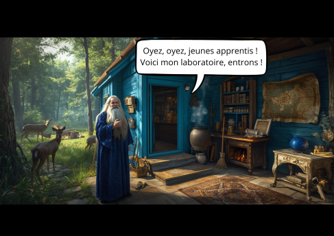
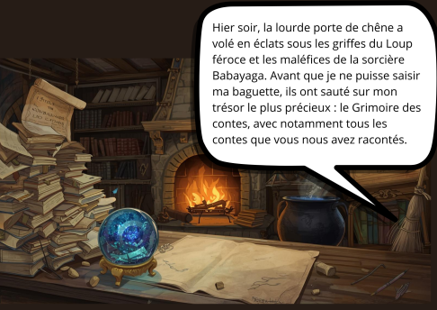
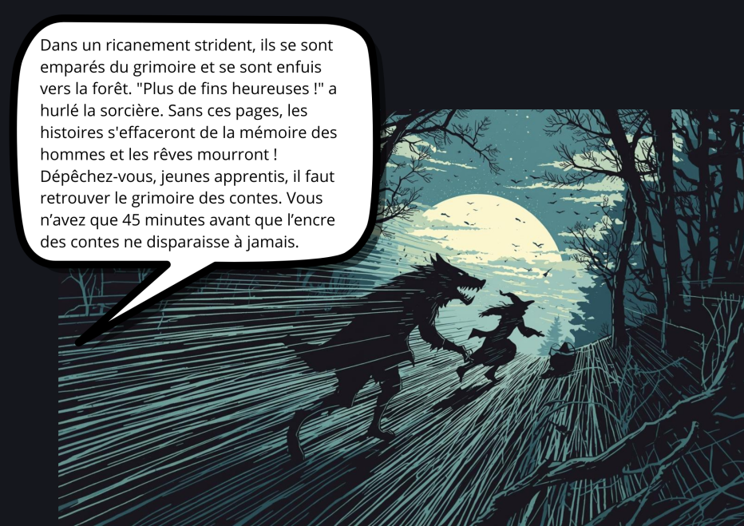

La Casa Bouh et Merlin
Simulation :

Une petite maison bleue nichée au cœur d'une forêt dense et lumineuse. À l'extérieur, on aperçoit des cerfs et des renards curieux.Une petite maison bleue nichée au cœur d'une forêt dense et lumineuse. À l'extérieur, on aperçoit des cerfs et des renards curieux.Merlin l'Enchanteur (grand, maigre, longue barbe blanche) accueille le joueur devant sa porte. Il a l'air inquiet.
Oyez, oyez, jeunes apprentis ! Voici mon laboratoire
Simulation :

Hier soir, la lourde porte de chêne a volé en éclats sous les griffes du Loup féroce et les maléfices de la sorcière Babayaga. Avant que je ne puisse saisir ma baguette, ils ont sauté sur mon trésor le plus précieux : le Grimoire des contes, avec notamment tous les contes que vous nous avez racontés. hier soir, la lourde porte de chêne vola en éclats sous les griffes du Loup féroce et les maléfices de la sorcière Babayaga. Avant que je ne puisse saisir ma baguette, ils ont sauté sur mon trésor le plus précieux : le Grimoire des contes, avec notamment tous les contes que vous nous avez racontés.

Dans un ricanement strident, ils se sont emparés du grimoire et se sont enfuis vers la forêt. "Plus de fins heureuses !" a hurlé la sorcière. Sans ces pages, les histoires s'effaceront de la mémoire des hommes et les rêves mourront ! Dépêchez-vous, jeunes apprentis, il faut retrouver le grimoire des contes. Vous n’avez que 45 minutes avant que l’encre des contes ne disparaisse à jamais. Dans un ricanement strident, ils se sont emparés du grimoire et se sont enfuis vers la forêt. "Plus de fins heureuses !" a hurlé la sorcière. Sans ces pages, les histoires s'effaceront de la mémoire des hommes et les rêves mourront ! Dépêchez-vous, jeunes apprentis, il faut retrouver le grimoire des contes. Vous n’avez que 45 minutes avant que l’encre des contes ne disparaisse à jamais.